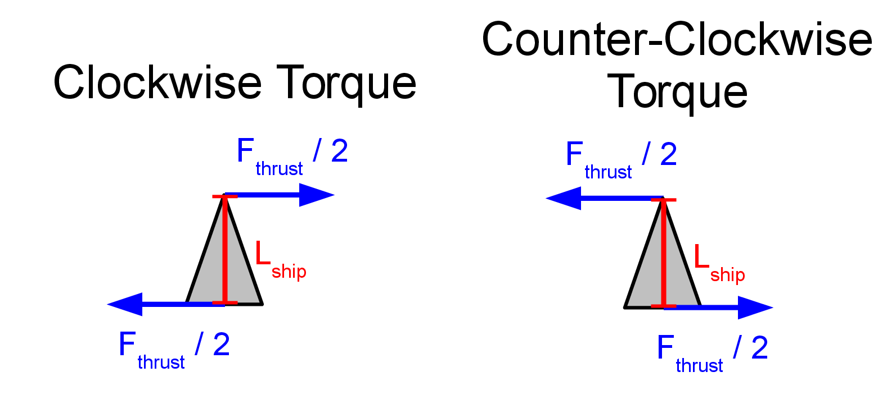

In this lab we will make the planetoids game more realistic by allowing the space craft to spin around as it would if it were really traveling in space. So in addition to a rocket engine that can propel the space craft forward, the ship will have thrusters on the front and back that can provide torque to spin the ship either the clockwise or counter-clockwise direction.
Step 0. For convenience I have supplied you with an "old" version of the planetoids game so you can play it and remember the feel of the game without the craft spinning around like mad. Download torque.pde and functions.pde. Create a folder called torque and then double click torque.pde so that the code runs using the processing interface. The game should behave like this. This version is similar to the earlier planetoids game except the name is changed and it actually has planetoids. There are also some new variables that we will use later.
Step 1. Think about thrusters and spin (no coding needed in this step).
Imagine that these thrusters work through clever engineering that diverts the thrust of the main engine so that half of this thrust goes to the front thruster and the other half goes to thruster at the back of the ship.

We can figure out the net torque on the ship by assuming that the center of mass is at the center of the ship (half-way from either end).
For counter-clockwise torque: $$\tau_{\rm net} = \sum_i \tau_i = +\left( \frac{F_{\rm thrust}}{2} \right) \cdot \left(\frac{L_{\rm ship}}{2}\right) + \left( \frac{F_{\rm thrust}}{2} \right) \cdot \left(\frac{L_{\rm ship}}{2}\right) = \frac{F_{\rm thrust} L_{\rm ship}}{2} $$
For clockwise torque: $$\tau_{\rm net} = \sum_i \tau_i = -\left( \frac{F_{\rm thrust}}{2} \right) \cdot \left(\frac{L_{\rm ship}}{2}\right) - \left( \frac{F_{\rm thrust}}{2} \right) \cdot \left(\frac{L_{\rm ship}}{2}\right) = -\frac{F_{\rm thrust} L_{\rm ship}}{2} $$
There are no other sources of torque in the planetoids game. This means that we can use the equations above to figure out the angular acceleration ($\alpha$).
Angular acceleration: $$\alpha = \frac{\tau_{\rm net}}{I}$$
where $I$ is the moment of inertia (sometimes I call this the rotational inertia). We will talk about what to use for the moment of inertia later.
From the angular acceleration ($\alpha$) we can figure out the angular speed ($\omega$): $$\omega_f = \omega_i + \alpha \cdot \Delta t$$
Finally, from the angular speed ($\omega$) we can figure out the angle that the ship is pointing: $$\theta_f = \theta_i + \omega \cdot \Delta t \label{eq:omega} $$
In what follows we will turn these equations into code.
Step 2. Make changes to the code so that the ship can spin around.
You will be given the code but it is up to you to figure out the right place in torque.pde to put it.
First, comment out the lines in torque.pde that change theta using //
if (key == CODED && keyCode == LEFT) {
// theta += 0.05;
} else if (key == CODED && keyCode == RIGHT) {
// theta += -0.05;
} else if (key == CODED && keyCode == UP ) {
Next add code so that pressing the left arrow produces a positive angular acceleration like this:
ang_accel = torque_thrusters/Iship;
and pressing the right arrow produces a negative angular acceleration like this:
ang_accel = -torque_thrusters/Iship;
Now use this angular acceleration to change the angular speed (omega) as in Eq. $\ref{eq:omega}$ by adding code like this:
omega = omega + ang_accel*dt;
In the code above, notice that the omega on the right side is the old omega value ($\theta_i$) and the omega on the left is the new value of omega (which is $\theta_f$).
Finally, add an equation so that theta is determined from the initial angle ($\theta_i$) and the angular speed ($\omega$).
theta = theta + omega*dt;
In the above I have used the same trick where theta on the right side is the old value ($\theta_i$) and theta on the left side is the new value ($\theta_f$).
Your program should not work yet because you haven't specified the torque or the moment of inertia yet. If you run the code the ship will only be able to move in the forward direction and not change direction at all.
Step 3. Specify the torque and moment of inertia for the ship.
Near the beginning of torque.pde and shortly before void setup() there are four new variables. Here they are:
float ang_accel; float Iship; float Lship; float torque_thrusters;
Currently, these variables aren't used for anything but you are about to change that. Follow the syntax of other variables like Fship, mass and dt.
Set Lship equal to 100.
Consider the comments on torque in Step. 1 and modify torque_thrusters like this:
float torque_thrusters = Fthrust*Lship/2;
Does the line above make sense to you? Why is there a factor of 2? If not see Step 1.
Now consider the variable Iship, which is the moment of interita for the ship. Look up the formula for the moment of inertia of a rod of length $L_{\rm ship}$. Follow the syntax of other variables and use this formula to determine Iship. Before you do this read through these hints:
Hint #1: use a decimal instead of a fraction in the formula for Iship. <-- Very important!
Hint #2: use Lship*Lship instead of Lship^2.
Hint #3: Remember that in the code the mass of the ship is just the variable mass.
If you modify all these lines of code in the right way you should get this behavior
Step 4. Add a timer and see how long you can survive.
Right after display();, add this line:
t += dt;
text("time = ",0.9*width,0.9*height);
text(t,0.95*width,0.9*height);
If successful your code should behave like this
Step 5. What happens when you change Lship, mass and Fthrust?
Experiment with different values of Lship, mass and Fthrusters. In what you turn in for the lab, comment on the effect of changing each of these variables (make one variable larger and try the game, then change another variable, etc.) What do you think are the best values to use for surviving the longest in the game? Add comments to the end of your torque.pde code or in the comments in the dropbox submission.
Extra credit: Add a projectile to the game
Option #3 In the original planetoids programming lab was to add a projectile to the ship. This projectile will travel at constant speed in whatever direction the ship is pointing when you press the spacebar. Either re-use the code you used to add a projectile to the earlier lab or develop it for the first time here. In what you turn in for this lab, indicate whether you reused old code or developed the projectile code for the first time.
Bonus Points: If the projectile hits an planetoid, the planetoid should shrink in size or split in two.
If you want to share your program with a friend, send them three files: Your torque.pde, a copy of functions.pde and right-click and download the file torque.html. As long as these three files are in the same folder on your or someone else's computer you should be able to double click on torque.html and play the game on a web browser. You don't need to install the processing interactive environment to get this to work.
If this seems overly complicated the other way you can share your program is by clicking "Create sketch" at openprocessing.org. Upload your code, set up an account (for free!) and then give your friends a link to the sketch.
{kind=link}